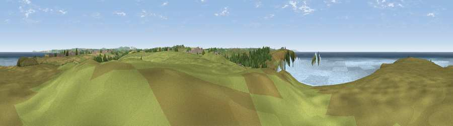

Viewpoint near Holywell
#7250 in England · top 16% of its area beats it · near Holywell · open accessWhere it is
The exact computed spot (SW 76925 59925). Click the marker for map links.
Public access: this spot lies on mapped open-access land (CRoW Act 2000) — you may roam here on foot. Computed from Natural England's CRoW access layer and OpenStreetMap rights of way — not the legal definitive map. Always verify locally.
The view, rendered

A 360° render of this exact spot computed from the terrain model, tree cover and land cover — summer colours, afternoon light, calibrated against photographs of famous viewpoints. Real trees, hedges and buildings will differ in detail.
The panorama
Grey silhouette: terrain skyline in each direction (720 bearings, Earth curvature and refraction included). Dashed green: skyline with trees (+15 m) and buildings (+8 m) as obstacles. Blue strip: how far the ground is visible on each bearing.
Where the view opens
Wedge length = distance to the farthest visible ground on that bearing (vegetation-aware). Rings at 10, 25 and 50 km.
What fills the view
43% water · 42% grassland · 7% woodland · 6% cropland · 2% built-up
Angular shares of the visible panorama (visual magnitude), not map area. Landscape diversity 0.50 (0–1 Shannon).
Key numbers
More beautiful places nearby
The staircase of upgrades: each row has a higher view potential than everything closer. Driving times are estimates from straight-line distance, calibrated against real road routing — check an actual route before setting out.
| Place | Direction | Drive | Score |
|---|---|---|---|
| Viewpoint near Holywell | S · 2 km | ~6 min | 71.1 |
| Viewpoint near Perrancoombe | SSW · 7 km | ~14 min | 71.3 |
| Viewpoint near St. Agnes | SW · 10 km | ~20 min | 72.3 |
| Viewpoint near St. Agnes | SSW · 11 km | ~21 min | 86.0 |
| St Agnes Beacon | SSW · 11 km | ~21 min | 86.1 |
| Viewpoint near Foxhole | ESE · 21 km | ~36 min | 86.4 |
| Viewpoint near Stenalees | E · 23 km | ~38 min | 88.0 |
| Viewpoint near Crackington Haven | NE · 50 km | ~71 min | 88.1 |
50.39677, -5.14012 · source: screening · position refined by local search. Computed location — check access rights before visiting.